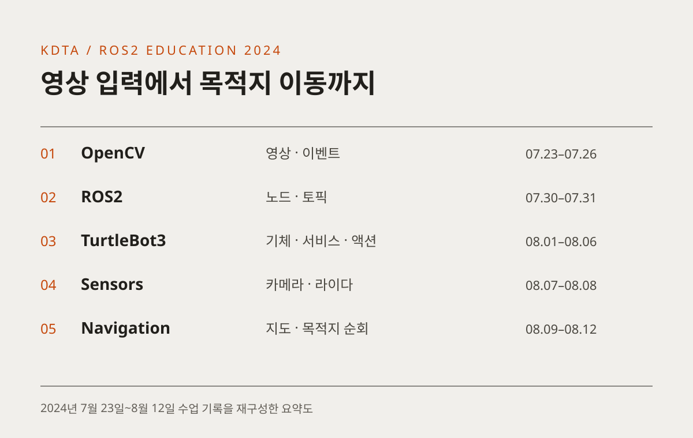

OFFLINE EDUCATION / KDTA 2024
영상을 읽고,
로봇을 목적지까지
C++ 영상 처리에서 ROS2 노드 통신, TurtleBot3 센서 제어와 목적지 이동까지. 2024년 7~8월 수업 기록과 예제 코드로 살펴보는 로봇 소프트웨어 교육입니다.
입력과 통신을 배워
로봇의 동작으로 연결합니다
화면에서 이벤트를 처리하고, 노드 사이에 메시지를 보내고, 센서 값으로 이동 명령을 바꿉니다. 수업은 작은 코드 예제를 실제 로봇에 적용하고 목적지를 지정하는 과정으로 이어졌습니다. 남아 있는 일자별 기록을 다섯 단계로 정리했습니다.

크게 보기 ↗날짜별 수업 기록을 바탕으로 재구성한 요약도입니다.
- 소개 범위
- 2024년 7월 23일~8월 12일
저장소에 남은 수업 기록 - 실습 환경
- C++ · OpenCV · ROS2 Humble
TurtleBot3 · Gazebo - 담당 역할
- 관련 교과 강의 · 최수길
시간표의 담당자 표기 확인
2024 / 07.23–07.26
화면의 입력을 처리하는 C++ 코드
7월 23일 수업은 Ubuntu 개발 환경과 Visual Studio Code, Git 연동을 준비하는 일에서 시작했습니다. OpenCV의 Point·Size·Rect·Scalar·Mat으로 이미지와 좌표를 다루고, 동영상을 읽거나 화면에 도형을 그리는 C++ 코드를 작성했습니다.
마우스와 키보드 이벤트, 트랙바 콜백을 연결한 뒤에는 마우스를 따라 움직이는 사각형을 종합 과제로 다뤘습니다. 이후 아핀·투시 변환과 Canny 에지, 허프 변환으로 확장했습니다. 입력을 받아 화면의 변화를 만드는 경험이 뒤의 로봇 카메라 처리로 이어집니다.
- 개발 환경 준비
- 이미지·동영상 입출력
- 이벤트·콜백 처리
- 변환·에지 검출
수업에서 다룬 연결
콜백은 입력이나 이벤트가 발생했을 때 실행할 함수를 등록하는 방식입니다. OpenCV의 마우스·트랙바 실습에서 경험한 구조를 이후 ROS2의 구독자와 타이머에서도 만나게 됩니다.
기록으로 남은 실습
영상 처리의 전체 범위를 소개하기보다 7월 23~26일 기록이 남아 있는 실습을 중심으로 정리했습니다.
2024 / 07.30–07.31
노드 사이에 데이터를 전달하기
7월 30일부터 ROS2의 노드·토픽·메시지와 패키지 작성을 시작했습니다. simple_pkg_cpp에서 기본 노드를 작성하고 OpenCV를 외부 라이브러리로 연결했습니다. 이어 타이머와 발행자, Node를 상속하는 클래스 구조를 다뤘습니다.
다음 수업에는 구독자와 시간 메시지를 추가하고 헤더와 구현 파일을 나누는 분할 컴파일을 실습했습니다. 마지막에는 다섯 노드가 세 토픽으로 문자열과 시간 정보를 주고받는 통합 실습을 진행했습니다. 메시지가 어느 노드에서 만들어져 어떤 구독자로 전달되는지 확인하는 구성입니다.
- 패키지·노드 작성
- 타이머·발행자
- 구독자·분할 컴파일
- 다섯 노드 통신 실습
수업에서 다룬 연결
실행 가능한 프로그램 하나를 만드는 데서 여러 노드가 메시지로 연결되는 구조로 확장했습니다. 같은 토픽을 여러 노드가 구독하는 경우도 다뤘습니다.
기록으로 남은 실습
저장소에는 simple_pkg_cpp와 topic_final 패키지가 남아 있습니다. 노드의 클래스 구성과 발행·구독 예제를 직접 확인할 수 있습니다.
2024 / 08.01–08.06
통신 구조를 실제 로봇에 적용하기
8월 1~2일에는 TurtleBot3를 연결하고 bringup과 키보드 조작을 확인했습니다. Gazebo에서도 같은 로봇을 실행하며 시뮬레이션과 기체 실습을 병행했습니다. turtlesim의 사각형 이동 코드를 TurtleBot용으로 바꾸는 과정에서 대상에 맞게 이동 알고리즘을 조정했습니다.
사용자 정의 서비스와 서버·클라이언트를 작성한 뒤 파라미터와 launch 파일을 연결했습니다. 8월 5~6일에는 Fibonacci 액션과 arithmetic 패키지로 토픽·서비스·액션을 한 프로그램 흐름 안에서 다뤘습니다. 파라미터를 YAML에 저장하고 실행할 때 불러오는 구성도 포함했습니다.
- 기체·시뮬레이션 연결
- 이동 코드 적용
- 서비스·파라미터
- 액션·통합 예제
수업에서 다룬 연결
요청에 대한 응답과 진행 과정이 있는 작업을 구분하고, 실행 설정을 코드 밖에서 관리하는 방법을 실습했습니다.
기록으로 남은 실습
기록에는 파라미터 콜백 적용이 되지 않은 부분과 인터페이스 include 문제를 수정한 내용이 함께 있습니다. 모든 예제가 문제없이 끝났다고 확대하지 않고 실제 실습 범위를 소개합니다.
2024 / 08.07–08.08
센서 데이터를 로봇의 움직임으로
8월 7일에는 TurtleBot3와 Gazebo의 카메라를 설정하고 canny_camera.cpp를 작성했습니다. 앞에서 익힌 에지 검출을 로봇이 받아오는 영상에 적용하면서 OpenCV 코드와 ROS2 카메라 처리를 연결했습니다.
다음 날에는 라이다를 활용해 약 30cm 거리를 유지하는 stay_thirty.cpp와 벽을 따라 이동하는 follow_wall.cpp를 작성했습니다. 센서가 읽은 값에 따라 속도 명령을 바꾸는 경험입니다. 센서 입력과 구동 명령을 한 노드의 처리 흐름 안에서 다뤘습니다.
- 카메라 입력
- 영상의 에지 처리
- 라이다 거리 확인
- 속도 명령 조정
수업에서 다룬 연결
화면에서 확인한 영상 처리와 로봇에서 실행하는 센서 제어를 연결했습니다. 입력 데이터가 실제 움직임을 바꾸는 조건이 됩니다.
기록으로 남은 실습
30cm는 실습의 목표 거리입니다. 목표값을 사용한 코드 작성·기체 실행 기록을 소개하며, 오차나 주행 안정성을 측정한 성능 결과로 제시하지 않습니다.
2024 / 08.09–08.12
지도를 만들고 목적지를 전달하기
8월 9일에는 SLAM으로 지도를 만들고 파일로 저장한 뒤 Navigation2를 실행했습니다. Gazebo와 TurtleBot3 기체에서 목적지 이동을 다루고, 8월 12일에는 네 곳의 목적지로 이동하는 내비게이션 액션 클라이언트를 작성했습니다.
각 순간의 속도를 직접 정하는 실습에서 지도를 바탕으로 목적지를 전달하는 방식으로 확장한 단계입니다. 저장소의 waypoints_action.cpp에는 웨이포인트 이동을 요청하는 코드가 남아 있습니다. 지도, 목표 위치, 액션의 관계를 실습 코드로 확인할 수 있습니다.
- 지도 생성
- 지도 파일 저장
- Navigation2 실행
- 여러 목적지 이동
수업에서 다룬 연결
기초 수업에서 배운 액션을 내비게이션에 적용했습니다. 로봇의 이동을 목표 요청과 진행 상태로 다루는 흐름입니다.
기록으로 남은 실습
8월 9일에는 팀 저장소와 발표 자료 준비, 주제·일정 회의도 기록되어 있습니다. 별도 일경험의 다섯 팀 프로젝트 글은 관련 사례로 연결하며, 이 수업의 동일한 최종 결과물로 단정하지 않습니다.
관련 프로젝트와 함께 읽기
같은 기관의 별도 미래내일 일경험 기록에는 데이터베이스, 멀티 로봇, 온도 신호, LED, 음성 대화를 주제로 한 다섯 팀의 프로젝트가 남아 있습니다. 수업 내용과 각 팀의 기획·개발 결과를 나누어 살펴볼 수 있도록 별도 글로 정리했습니다.
이 글의 기간은 전체 사업의 공식 시작·종료일이 아니라 저장소에서 확인한 수업 기록의 범위입니다. 시간표는 담당 교과 확인에 사용하고, 세부 실습 순서는 일자별 수업 기록을 우선했습니다. 코드 링크는 확인 당시 커밋으로 고정했습니다.